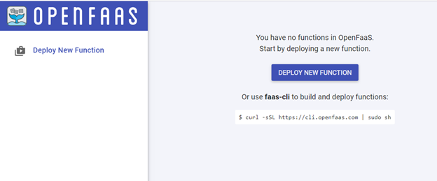
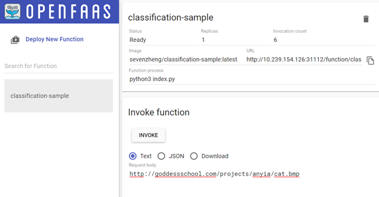
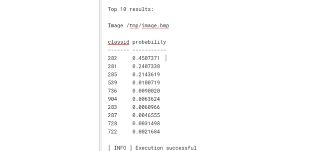

OpenFaaS*
This tutorial shows how to set up OpenFaaS running on top of a Kubernetes* cluster on Clear Linux OS, obtain Clear Linux OS based OpenFaaS templates, and develop an example function.
Background
Functions as a Service (FaaS) is a framework for building serverless functions that are ephemeral, automatically scalable, and focused pieces of code running within containers to allow developers to focus on application code rather than infrastructure nuances.
Many cloud service providers have ready-to-use FaaS offerings which offer a high degree of convenience for developers and granular billing based on per-second usage.
If you want an on-premise or self-hosted serverless capability to avoid vendor lock-in or simply want more development, OpenFaaS is currently the most popular solution in the space based on the number of Github stars on the project.
Prerequisites
For simplicity, this tutorial assumes you have a Kubernetes single node cluster with only master node running Clear Linux OS.
For detailed instructions on how to install Clear Linux OS, see the getting started section.
For a detailed guide on how to set up Kubernetes, see the documentation on Kubernetes.
Note
Please note that in this example the master node was tainted to be able to be scheduled, which means containers are able to be deployed to the master node.
kubectl taint nodes --all node-role.kubernetes.io/master-
Deploy OpenFaaS
Install the official command line tool for using OpenFaas, faas-cli, by installing the faas-cli bundle.
sudo swupd bundle-add faas-cli
Download the faas-netes, the OpenFaaS provider templates that enable Kubernetes for OpenFaaS.
git clone https://github.com/openfaas/faas-netes.git
Set variables for the OpenFaaS admin user and password.
Warning
For simplicity, this tutorial uses a basic authentication with an unecrypted username and password. For production environments, see the OpenFaaS documentation on Deploying OpenFaas in Production.
export FAAS_USER=admin export FAAS_PASSWD=clearlinux
Deploy the OpenFaaS stack on Kubernetes using kubectl.
kubectl apply -f faas-netes/namespaces.yml
kubectl -n openfaas create secret generic basic-auth \ --from-literal=basic-auth-user=$FAAS_USER \ --from-literal=basic-auth-password="$FAAS_PASSWD"
kubectl apply -f faas-netes/yaml/
Wait for the OpenFaaS pods and services to get ready. This involves downloading container images from the Internet and may take some time depending on your Internet connection. You can enter the commands below to have the terminal wait until services are ready to use.
kubectl wait --for=condition=available --timeout=600s deployment/gateway -n openfaas kubectl wait --for=condition=available --timeout=600s deployment/faas-idler -n openfaas
Login to the OpenFaaS instance. 31112 is the default port.
You can login over the command-line:
export OPENFAAS_URL=http://127.0.0.1:31112 echo -n $FAAS_PASSWD | faas-cli login --password-stdin
You can also login to the OpenFaaS web interface by navigating to http://${master_node_IP}:31112

Figure 1: OpenFaaS web interface login page
{kind=link}
OpenFaaS templates
OpenFaaS templates, though not necessary, abstract configurations for running functions in common programming languages. Templates allows developers to better focus on writing the code for their function.
OpenFaaS has dozens of templates in the official store. There are also Clear Linux OS-based templates available for download.
You can list all the official templates in the store using faas-cli.
faas-cli template store list NAME SOURCE DESCRIPTION csharp openfaas Classic C# template dockerfile openfaas Classic Dockerfile template go openfaas Classic Golang template java8 openfaas Classic Java 8 template node openfaas Classic NodeJS 8 template php7 openfaas Classic PHP 7 template python openfaas Classic Python 2.7 template python3 openfaas Classic Python 3.6 template ...
Create and enter a workspace.
mkdir ~/faas-example cd ~/faas-example
Download the Clear Linux OS-based OpenFaaS templates which are stored in the https://github.com/clearlinux/dockerfiles repository and copy them into your working directory.
git clone https://github.com/clearlinux/dockerfiles.git cp -r dockerfiles/FaaS/OpenFaaS/template/ .
After the Clear Linux OS based templates have been retrieved, they will show up in the same repository and available to use locally.
faas-cli new --list Languages available as templates: - dockerfile-clearlinux - python3-clearlinux
OpenFaaS is ready to use at this point. See the OpenFaaS documentation to learn more about deploying functions.
Example: Develop a function
In this example, we’ll imagine a FaaS solution where: a user provides a URL to a pictures, which invokes a function to do image classification and outputs the result.
We will use the OpenVINO™ toolkit - Deep Learning Deployment Toolkit (DLDT) to do the image inference. As inference development is not the focus of this example, we will just use the built-in sample “classification_sample_async” for this function.
We’ll use the python3-clearlinux template as a base and customize it by:
Adding additional Clear Linux OS bundles (bundles.txt)
Adding additional required python packages (requirements.txt)
Adding a script to download and convert DLDT models (helper_script.sh)
Finally, we’ll develop the python function to be run (handler.py)
More ways to customize the Clear Linux OS based OpenFaaS templates can be found in the README on GitHub.
Enter the previously created working directory.
cd ~/faas-example
Create a new function skeleton
faas-cli new --lang python3-clearlinux classification-sample --prefix="<your docker name>"
This will create the directory structure below:
tree . ├── classification-sample │ ├── bundles.txt │ ├── handler.py │ ├── helper_script.sh │ ├── __init__.py │ └── requirements.txt ├── classification-sample.yml
Add the required Clear Linux OS bundles to the
bundles.txtfile.echo "computer-vision-openvino" >> classification-sample/bundles.txt
Add the required python packages to the
requirements.txtfile.echo "glob3" >> classification-sample/requirements.txt echo "urllib3" >> classification-sample/requirements.txt echo "networkx==2.3" >> classification-sample/requirements.txt
OpenCV has a model downloader and other automation tools to help downloading models and converting them into different formats. Customize the OpenFaaS template to use the model-downloader in the
helper_script.shfile. Thehelper_script.shfile script gets executed during the build process.helper_script.shcat classification-sample/helper_script.sh #!/bin/bash # Download and convert models export MODEL_DIR="/models" export MO_PATH="/usr/share/openvino/model-optimizer/mo.py" export MODEL_NAME="resnet-50-int8-tf-0001" # Download and convert models model-downloader --name $MODEL_NAME -o $MODEL_DIR model-converter --name $MODEL_NAME -d $MODEL_DIR -o $MODEL_DIR --mo $MO_PATH
With the requirements added to the template. Write a python in the
handler.pyfile. This function will parse the input picture URL, find the model path, and call “classification_sample_async” to do image classification.handler.py#!/usr/bin/python3 import os import glob import urllib.request from urllib.parse import urlparse from os.path import splitext ALLOWED_IMAGE_TYPE = [".bmp", ".BMP"] def get_ext(url): parsed = urlparse(url) _, ext = splitext(parsed.path) return ext def get_image_from_url(url): """get image and save to local path""" ext = get_ext(url) local_file_path = "/tmp/image" + ext urllib.request.urlretrieve(url, local_file_path) return local_file_path def find_model_path(): """ return model xml path """ model_dir = os.getenv('MODEL_DIR', '/models') model_name = os.getenv('MODEL_NAME', 'resnet-50-int8-tf-0001') + ".xml" precision = os.getenv('MODEL_PRECISION', 'FP32') pattern = model_dir + '/**/' + precision + '/' + model_name paths = glob.glob(pattern, recursive=True) if not len(paths): print("No " + model_name + " found") return None return paths[0] def do_classification(image, model_path): """ Use dldt sample classification_sample_async """ cmd = "classification_sample_async -i " + image + " -m " + model_path return os.system(cmd) def handle(req): """handle a request to the function Args: req (str): request body """ if not len(req): print("Request body is missing.") return model_path = find_model_path() if model_path is None: return if get_ext(req) not in ALLOWED_IMAGE_TYPE: print("Only " + ALLOWED_IMAGE_TYPE + " images are allowed.") return file_path = get_image_from_url(req) do_classification(file_path, model_path)
Build and deploy the function to the OpenFaaS instance.
faas-cli build --build-arg http_proxy=$http_proxy --build-arg https_proxy=$https_proxy -f classification-sample.yml faas-cli deploy --env=http_proxy=$http_proxy --env=https_proxy=$https_proxy -f classification-sample.yml
Finally, test the function by going to the OpenFaaS web interface at http://${master_node_IP}:31112 and Invoking the classification-sample function with a URL to any BMP image. The result should show the what the image has been identified as and probability.

Figure 2: OpenFaaS web interface invoke function

Figure 3: OpenFaaS web interface invoke function
{kind=link}
{kind=link}
Intel, OpenVINO, and the Intel logo are trademarks of Intel Corporation or its subsidiaries.